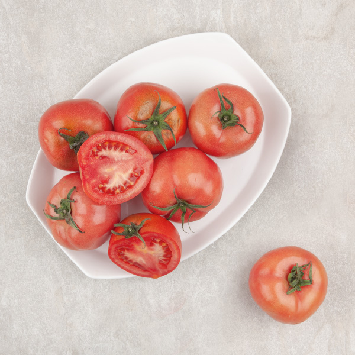
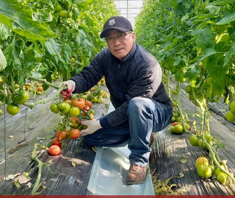
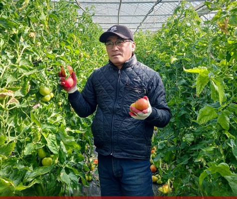

이번 주만 특별 혜택
흙이 키우고
햇살이 완성한
정규연 토마토
편리한 재배 방식 대신 땅의 정직함을 선택한
정규연 생산자의 고집을 담았습니다.
10% 할인


스크롤하여 이야기를 만나보세요
↓
편리한 재배 방식 대신 땅의 정직함을 선택한
정규연 생산자의 고집을 담았습니다.

대부분의 토마토는 양액 재배, 즉 물과 영양제로 키웁니다.
하지만 정규연 생산자는 다릅니다.
수십 년 된 땅에서, 흙이 품은 미네랄을 그대로 먹고 자란 토마토.
그래서 과육이 탄탄하고, 한 입 베어 물면
흙의 생명력이 고스란히 전해집니다.

양액 재배 토마토는 깔끔하지만, 어딘가 밋밋합니다.
토경재배 토마토는 다릅니다.
흙 속 수백 가지 미생물과 미네랄이 만들어낸,
양액으로는 절대 흉내 낼 수 없는 깊고 진한 본연의 향.
오직 두레생협에서만 느낄 수 있는
토마토 본연의 깊은 맛입니다.
효율을 위해 기계로 한꺼번에 수확하면
덜 익은 것, 너무 익은 것이 섞이기 마련입니다.
정규연 생산자는 하나하나 손으로 직접 살펴,
가장 맛있는 순간에 수확합니다.
그 정성이 식탁 위 한 알 한 알에 담겨 있습니다.

카드를 뒤집어 정규연 토마토의 비밀을 확인하세요
👈 카드를 클릭해보세요!
진짜 흙에서 자란 토마토의 깊은 맛
이번 주만 10% 할인된 가격으로 드립니다
* 두레생협 조합원 전용 혜택입니다.